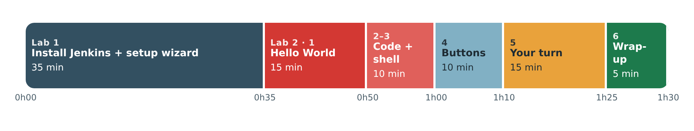

Lab 2 · Your First Pipeline
Lab 2 – Your First Pipeline
In this lab you create your first Jenkins pipeline: a script that tells Jenkins which steps to run, in which order. It is the "pipeline as code" idea from the course, applied for real.
Learning objectives
By the end of this lab, you will be able to:
- Install a Jenkins plugin.
- Create a Pipeline job in Jenkins.
- Write a simple declarative pipeline and explain each of its blocks.
- Run a pipeline, then read its result and its logs.
- Use the main Jenkins buttons: Build Now, Console Output, Configure, Replay, Pipeline Syntax.
- Run shell commands from a pipeline.
Session plan (1h30)
This session also includes the Jenkins installation from Lab 1:

Start your Jenkins container again
docker start jenkins-localVideo: Demo: install Jenkins and create a first pipeline
Installation with Docker, then a first pipeline.